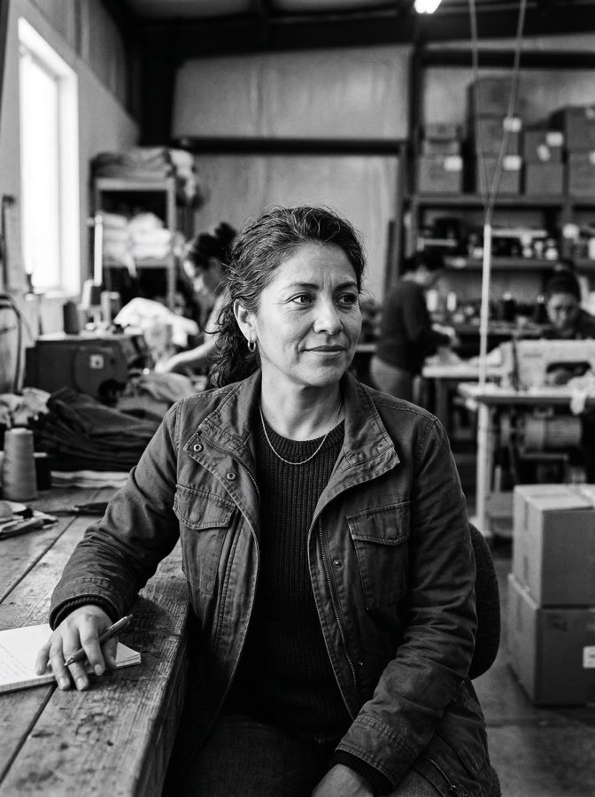
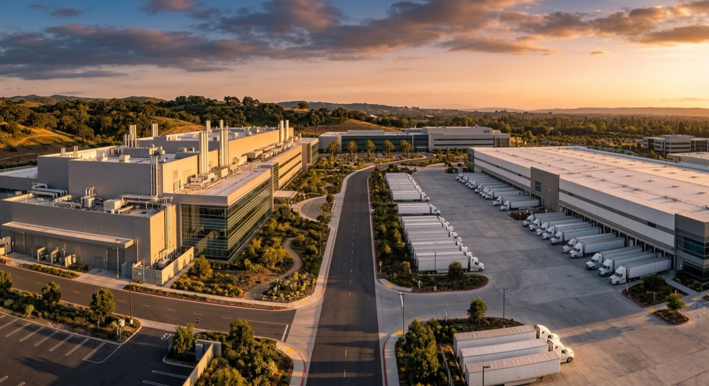

Still Striking Gold
The fourth-largest economy on Earth. Built here.
$4.1T
GDP, RANKED 4TH GLOBALLY
19M
WORKERS EMPLOYED
40%
CONTAINER IMPORTS HANDLED
49%
U.S. VENTURE CAPITAL
1 in 4
U.S. PATENTS FILED
1/3
U.S. VEGETABLES GROWN
The fourth-largest economy on Earth didn't happen by accident. It was built by 19 million workers, funded by nearly half of America's venture capital, and anchored by industries that feed, supply, and power the country. That record stands on its own.
FACTS
The Truth About California
33 of the world's 50 leading AI companies are here.That concentration of talent, capital, and infrastructure does not happen by accident. California has been the address of the technology industry for seventy years.
58 Fortune 500 companies call California home.More than any other state. Across aerospace, technology, agriculture, finance, and entertainment, the country's largest enterprises are disproportionately headquartered here.
40% of America's imports move through California ports.The Port of Los Angeles and Port of Long Beach together form the busiest cargo complex in the Western Hemisphere. What the country consumes largely arrives here first.
One in four U.S. patents originates in California.From biotech and semiconductors to clean energy and robotics, California's research institutions and private sector generate a quarter of the nation's intellectual output.
Nearly half of all U.S. venture capital lands here.Founders and investors have consistently chosen California as the place to build and fund the next generation of industries. That pattern has held for decades.
California grows one-third of America's vegetables.The Central Valley is the most productive agricultural region in the world. Eighty-five percent of American wine is also made here.

While the world was talking, California kept building.
